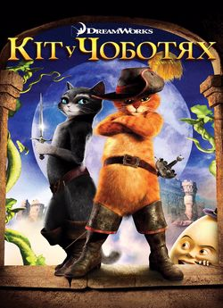
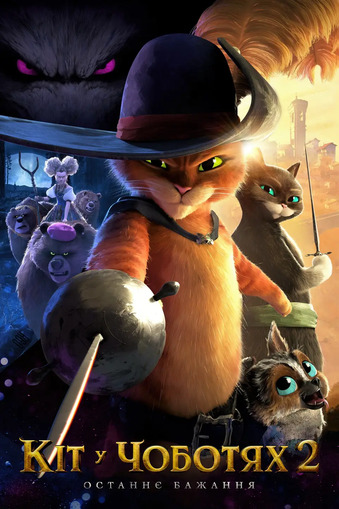

Мультфільм «Кіт у чоботях» — це захоплива й водночас глибока історія, яка об’єднує у собі пригоди, гумор і важливі життєві уроки. Головний герой — хоробрий і розумний кіт, який завжди діє з благими намірами. Він став одним із найвідоміших персонажів світової культури, адже його образ поєднує відвагу, кмітливість і щиру доброту. Історія кота бере початок із народних казок, але найвідомішою версією вважається твір французького письменника Шарля Перро. Саме його казка надихнула багатьох режисерів створити мультфільми, у яких Кіт у чоботях ожив на екрані, ставши улюбленцем дітей і дорослих.
Походження історії
Перші згадки про кмітливого кота з’явилися в європейських казках ще у XVII столітті. У казці Шарля Перро йдеться про бідного мірошникового сина, якому після смерті батька дістався лише кіт. На перший погляд, це здавалось великою невдачею, але саме кіт допоміг своєму господарю стати заможним і відомим. Він використовував розум, хитрість і кмітливість, щоб обдурити могутніх людей і водночас допомогти господарю знайти своє місце у світі. Цей сюжет вчить, що справжня цінність — не в речах, а в розумі, вірності й умінні діяти мудро.
Сучасна екранізація
У ХХІ столітті Кіт у чоботях отримав нове життя завдяки студії DreamWorks, яка створила повнометражний мультфільм «Puss in Boots». Голос головного героя озвучив знаменитий актор Антоніо Бандерас, що додало персонажу особливого шарму, емоційності та харизми. У мультфільмі кіт постає не просто казковим помічником, а справжнім героєм, який має складний характер, власну історію та глибокі почуття. Він не лише бореться зі злом, а й шукає своє місце у житті, прагне справедливості й дружби. Сюжет сповнений гумору, пригод і теплих моментів, які залишають позитивне враження після перегляду.
Характер головного героя
Кіт у чоботях — це уособлення хоробрості, розуму та благородства. Він має загострене почуття справедливості й завжди готовий допомогти тим, хто потребує підтримки. Попри свою хитрість, він не є підступним — його дії завжди продиктовані добрими намірами. Кіт поводиться, як справжній лицар: він чемний, шляхетний і водночас дуже відважний. Його впевненість, гумор і чарівність роблять його улюбленцем не лише серед людей, а й серед інших персонажів мультфільму. Він часто потрапляє у складні ситуації, але завдяки розуму, сміливості та доброті завжди знаходить вихід.
Сюжет мультфільму
Дія мультфільму розгортається у фантастичному світі, де поряд живуть люди, чарівні істоти й тварини. Кіт вирушає у небезпечну подорож, щоб очистити своє ім’я від несправедливих звинувачень. На своєму шляху він зустрічає старих друзів і нових ворогів, переживає чимало пригод і випробувань. Поруч із ним — кмітлива Кітті М’яколапка, яка стає не лише союзницею, а й близькою подругою. Разом вони борються за добро, захищають слабких і доводять, що навіть маленька істота може змінити світ.
Тематика та мораль
Мультфільм навчає, що справжній герой — це не той, хто має силу, а той, хто має серце. Кіт у чоботях демонструє, що сміливість, доброта і віра в себе допомагають подолати будь-які труднощі. Він не зраджує друзів, не боїться небезпеки й завжди бореться за справедливість. Мораль історії полягає у тому, що потрібно залишатися чесним і добрим навіть тоді, коли інші чинять несправедливо. Ця історія вчить нас цінувати дружбу, поважати інших і вірити у власні сили.
Цікаві факти про мультфільм
Кіт у чоботях спочатку з’явився у фільмах про Шрека як другорядний персонаж. Але його популярність була настільки великою, що згодом він отримав власний фільм і став головним героєм. Антоніо Бандерас настільки полюбив свого персонажа, що озвучував його навіть у відеоіграх і коротких мультфільмах. Образ кота створений на основі європейського лицаря: він має плащ, капелюх із пером і чоботи, які символізують шляхетність. Його великі очі стали впізнаваним мемом у всьому світі, бо саме ними він часто "розчулює" ворогів.

Кіт і глядач
Глядачі різного віку люблять Кота у чоботях за його харизму, розум і доброту. Діти бачать у ньому веселого героя, який потрапляє в кумедні ситуації. Дорослі ж помічають у ньому глибокий характер, вірність принципам і щирість. Цей персонаж доводить, що навіть у світі, де є несправедливість, можна залишатися чесним і відданим собі. Його образ нагадує про те, що зовнішність не головне — важливі серце й наміри.
Музика і атмосфера
Важливу роль у мультфільмі відіграє музика. Іспанські мотиви, гітара та ритмічні танці створюють відчуття пригод і радості. Кожна сцена сповнена енергії, гумору й тепла. Анімація яскрава, насичена кольорами, передає настрій казки та чарівного світу, у якому живе Кіт у чоботях. Завдяки цьому мультфільм приємно дивитися навіть багато років після прем’єри.
Вплив на культуру
Кіт у чоботях став справжнім символом віри в себе. Його образ надихнув художників, письменників і режисерів у різних країнах світу. У дитячих книжках, серіалах і навіть іграх він залишається прикладом сміливості, гумору й шляхетності. Багато дітей після перегляду мультфільму хочуть бути схожими на нього — відважними, добрими й розумними.
Висновок
Мультфільм «Кіт у чоботях» — це не просто розвага, а справжня історія з душею. Він показує, що добро завжди перемагає зло, навіть якщо шлях до цього непростий. Кіт у чоботях — приклад того, що головне не сила, а серце. Його історія надихає ніколи не здаватися, боротися за справедливість і вірити у свої мрії. Цей герой залишиться улюбленцем ще багатьох поколінь, адже він навчає нас бути кращими, чеснішими й добрішими.